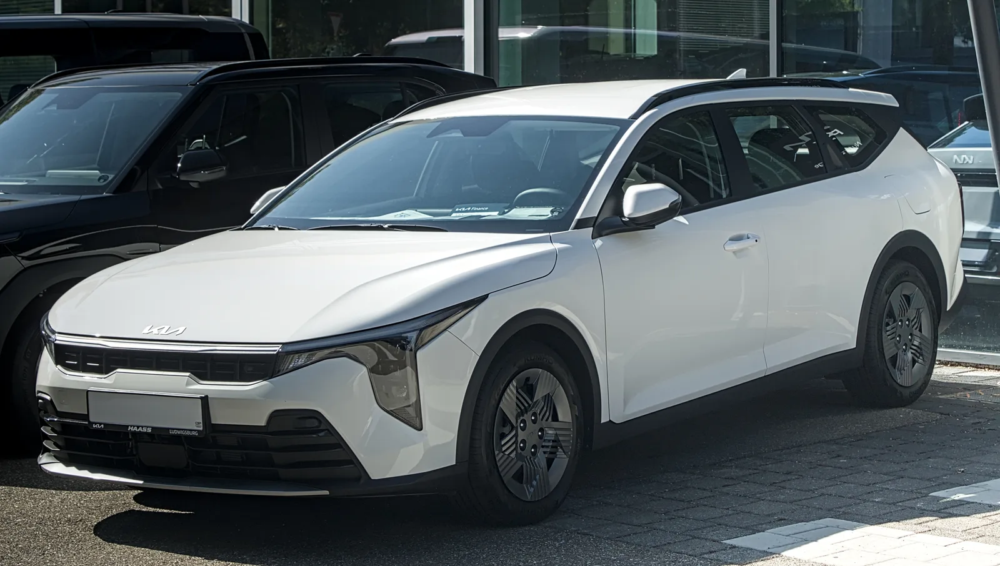
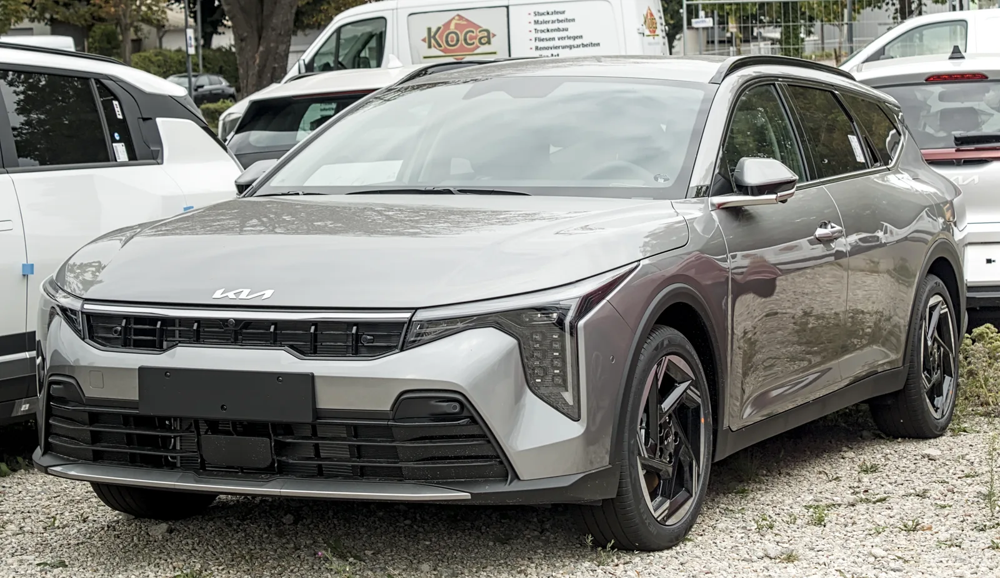
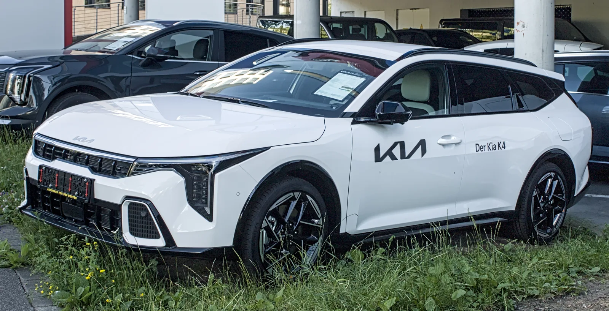

▲ 기아 K4 스포츠왜건. 세단·해치백에 이어 유럽 시장을 겨냥한 왜건형으로, 올 하반기 풀 하이브리드 모델이 추가된다. (사진=Wikimedia Commons)
세단·해치백 잇는 마지막 퍼즐, 왜건
기아가 지난 1월 13일 유럽에서 'K4 스포츠왜건(Sportswagon)'을 공개하며 K4 라인업의 마지막 퍼즐을 맞췄다. 더구루에 따르면 K4 스포츠왜건은 기존 씨드(Ceed) 스포츠왜건을 대체하는 모델로, SUV 중심으로 재편된 유럽 시장에서도 꾸준한 수요를 유지하고 있는 왜건 세그먼트를 정조준한 차량이다.
세단과 5도어 해치백으로 먼저 라인업을 채운 기아는 이번 왜건형 추가로 K4를 진정한 '풀 라인업' 준중형차로 완성했다. 왜건 특유의 낮고 긴 실루엣에 GT-라인 트림을 앞세운 스포티한 외장을 더한 것이 특징으로, 고광택 블랙 벨트라인과 날렵한 C필러 그래픽, 숨겨진 뒷문 손잡이 등 디테일에서 기존 세단·해치백과 차별화된 인상을 준다.

▲ GT-라인 트림이 적용된 K4 스포츠왜건. 고광택 블랙 몰딩과 전용 범퍼로 스포티함을 강조했다. (사진=Wikimedia Commons)
차체·트렁크 스펙
뉴스와에 따르면 K4 스포츠왜건의 전장은 4,695mm, 휠베이스는 2,720mm로 세단 대비 늘어난 뒷좌석 공간과 적재 능력을 확보했다. 트렁크 용량은 기본 604리터로 시작해, 2열 시트를 완전히 접으면 최대 1,439리터까지 확장된다. 이는 동급 왜건 중에서도 상위권에 속하는 수치다.
| 항목 | 제원 |
|---|---|
| 전장 / 휠베이스 | 4,695mm / 2,720mm |
| 트렁크 용량(기본/최대) | 604L / 1,439L |
| 기본 엔진 | 1.0 T-GDI 3기통 터보, 115마력 + 6단 수동 |
| 상급 엔진 | 1.6 T-GDI 가솔린, 148~178마력 (7단 DCT, 48V 마일드 하이브리드 적용) |
| 독일 판매가 | 2만 9,890유로~3만 9,890유로 |
| 생산지 | 멕시코 페스케리아 공장 |
하반기 풀 하이브리드 합류, K5와는 안 겹치나
기아는 K4 스포츠왜건에 이미 적용된 48V 마일드 하이브리드와 별개로, 올 하반기 중 풀 하이브리드(HEV) 모델을 순차 도입하겠다고 공식적으로 밝혔다. 아직 구체적인 시스템 출력이나 연비 수치는 공개되지 않았지만, 준중형급에서 가솔린 대비 확실한 연비 우위를 앞세워 왜건 라인업의 상품성을 한층 끌어올릴 전망이다.
다만 카삼(다음)이 짚었듯, K4 하이브리드가 상급 모델인 K5 하이브리드와 가격·상품성에서 겹칠 가능성도 거론된다. 두 모델 모두 준중형~준대형 경계에서 하이브리드 수요를 노리는 만큼, 기아가 트림·옵션 구성으로 두 모델의 포지셔닝을 어떻게 나눌지가 관전 포인트다. 북미형 K4 세단에는 이미 190마력을 내는 1.6리터 가솔린 터보 엔진이 별도로 올라가 있어, 하이브리드가 추가되면 K4 파워트레인 라인업은 가솔린 터보·마일드 하이브리드·풀 하이브리드 3단 구성으로 완성된다.

▲ 딜러 전시장에 놓인 K4 스포츠왜건. 루프레일과 늘어난 2열 유리창 면적에서 왜건 특유의 실용성이 드러난다. (사진=Wikimedia Commons)
멕시코 생산, 유럽 전용 전략
K4 스포츠왜건은 멕시코 누에보레온주 페스케리아 공장에서 생산된다. 기아는 2023년 이 공장에 1억 5천만 달러를 투자해 연간 최대 40만 대 생산 능력을 확보한 바 있다. 세단·해치백에 이어 왜건까지 한 공장에서 소화하며 북미·유럽 수출 물량을 유연하게 대응하는 구조다.
기아는 K4 스포츠왜건을 우선 유럽 전역으로 확대 공급할 계획이며, 북미나 국내 출시 일정은 아직 공식적으로 발표하지 않았다. 왜건이라는 차종 특성상 SUV 선호가 뚜렷한 북미·국내보다는 왜건 수요가 꾸준히 유지되는 유럽 시장에 집중할 가능성이 크다는 분석이 나온다. 기아 K4 글로벌 라인업의 세부 사양은 기아 글로벌 사이트에서 확인 가능하다.
경쟁 모델과 포지셔닝
유럽 시장에서 K4 스포츠왜건의 직접 경쟁자는 폭스바겐 골프 에스테이트와 파사트 에스테이트로 꼽힌다. 두 모델 모두 오랜 시간 준중형·중형 왜건 세그먼트를 지켜온 강자로, 기아는 GT-라인 기반의 스포티한 디자인과 넉넉한 적재 공간을 앞세워 정면 승부를 예고했다.
국내 소비자에게 익숙한 현대 아반떼나 혼다 시빅에는 애초에 왜건형 라인업이 없다는 점도 눈에 띈다. 준중형 세단·해치백 시장에서 완성차 업체들이 SUV 쏠림 속에 왜건을 사실상 정리한 가운데, 기아가 K4를 통해 유럽 한정으로나마 왜건 명맥을 잇고 있는 셈이다.
| 모델 | 포지셔닝 |
|---|---|
| 기아 K4 스포츠왜건 | 세단·해치백에 이은 유럽 전용 왜건, 하반기 하이브리드 추가 |
| 폭스바겐 골프 에스테이트 | 준중형 왜건 세그먼트의 오랜 기준점 |
| 폭스바겐 파사트 에스테이트 | 한 체급 위 중형 왜건, 넓은 적재공간 강점 |
| 현대 아반떼 / 혼다 시빅 | 세단·해치백만 판매, 왜건형 라인업 없음 |
국내 출시는 여전히 안갯속
정작 국내에서는 'K4'라는 이름 자체를 만나보기 어렵다. K4는 국내에서 판매 중인 K3의 사실상 후속 개발명(CL4)이지만, 북미·글로벌 시장을 겨냥해 차급을 키우고 아반떼와의 직접 경쟁을 피하기 위해 새로 이름 붙인 모델이다.
지난해 11월 기아 고용안정위원회에서 합의된 국내 공장 신차 양산 계획에도 K4(CL4)는 포함되지 않은 것으로 알려지며, 국내 정식 출시 가능성은 더욱 낮게 점쳐진다. 그럼에도 국내 소비자들 사이에서는 북미형 K4의 디자인과 상품성에 대한 관심이 꾸준히 이어지며 '역수입' 요청이 끊이지 않고 있다. 왜건형까지 추가된 지금, 세단과는 또 다른 실용성을 갖춘 K4 스포츠왜건이 국내 소비자들의 아쉬움을 더욱 키울 것으로 보인다.

▲ 기아 K4 세단의 후면부. 왜건형은 세단과 전면 디자인을 공유하지만, 후면은 확장된 테일게이트와 루프라인으로 완전히 다른 인상을 준다. (사진=Wikimedia Commons)
전망
K4 스포츠왜건과 하이브리드 추가는 기아가 SUV 편중 전략 속에서도 세단·왜건 시장의 수요를 놓치지 않으려는 움직임으로 읽힌다. 유럽에서의 반응이 좋다면 하이브리드 추가를 계기로 판매 지역 확대 가능성도 배제할 수 없다. 다만 현재로서는 국내 출시 계획이 없는 만큼, 국내 소비자들은 당분간 해외 매체를 통해 K4 왜건의 소식을 지켜볼 수밖에 없는 상황이다.